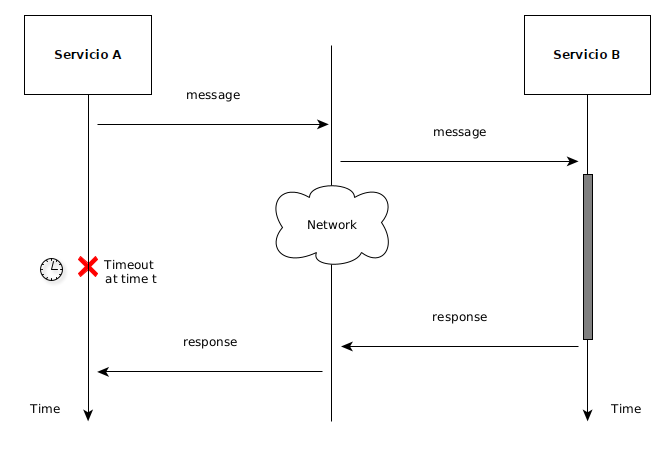
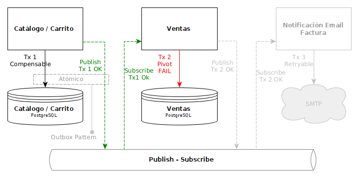
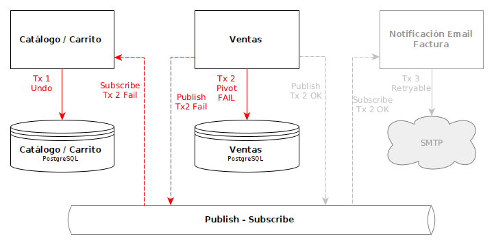

Arquitecturas Distribuídas
En las arquitecturas distribuidas el sistema es particionado en aplicaciones simples donde cada una se deploya en su propio contenedor, el cual corre en su propio proceso y se comunican entre ellas enviándose mensajes a través de la red.
Arquitecturas Distribuídas

Arquitecturas Distribuídas
¿Porqué distribuir?
Para mejorar la performance, la escalabilidad y la disponibilidad de un servicio.
En microservicios se suma la posibilidad de escalar equipos de desarrollos grandes.
Arquitecturas Distribuídas
Pero... como toda decisión de diseño, tiene cosas buenas y también tiene complicaciones.
Complicación 1: Fallas Parciales.
Complicación 2: Adios a las Transacciones tal como las conocemos de las BDs relacionales.
Arquitecturas Distribuídas
Fallas Parciales
"Cuando ejecutamos una aplicación en una única máquina su comportamiento es predecible. Si el hardware donde corre funciona, la aplicación ante las mismas entradas producirá siempre las mismas salidas. Si el hardware donde corre fallara por algún motivo, la aplicación completa dejaría de funcionar (Falla Total). Es decir, una aplicación en una única máquina funciona o no funciona, pero no existe nada en el medio".
Arquitecturas Distribuídas
Fallas Parciales
"Las aplicaciones distribuidas se conforman de varios elementos que podrían fallar. La red, junto a toda su complejidad, más las máquinas donde corra la aplicación son parte del mismo sistema. Cualquiera de alguno de estos elementos (equipos, dispositivos de red como routers, switches, etc) que forman parte de un sistema distribuido podría fallar mientras que el resto de los elementos podrían seguir funcionando. Esto se conoce como falla parcial".
Designing Data-Intensive Applications (Martin Kleppmann)
Inconvenientes frecuentemente ignorados: Falacias de los sistemas distribuidos.
Arquitecturas Distribuídas: La red no es confiable!

Arquitecturas Distribuídas: La red no es confiable!
Arquitecturas Distribuídas: La red no es confiable!
¿Cómo lideamos con fallas parciales?
Siempre usar Timeouts
Hacer las operaciones Idempotentes.
Arquitecturas Distribuídas: La red no es confiable!
¿Qué significa hacer las operaciones idempotentes?
Que su ejecución producirá el mismo efecto o resultado si se ejecutara una vez o varias veces.
Cada operacion se identifica con un único identificador, de modo que quien recibe puede verificar si dicha operación ya fue procesada o no.
Arquitecturas Distribuídas: Transacciones
Chau Chau ACID...
Tx Atómicas: en sistemas centralizados, las Tx permiten realizar una serie de operaciones donde si alguna en el medio falla, todo es rollbackeado por la BD.
Como desarrolladores, ésto nos hace la vida muy simple.
¿Qué sucede en arquitecturas distribuídas?
Arquitecturas Distribuídas: Transacciones
Aparece el concepto de: Transacciones Distribuídas
Supongamos los siguientes verticales en una arquitectura de microservices:
Transacciones Distribuídas
Antes de ver como es posible resolver esto...
¿Sólo se dan las transacciones distribuídas en Arquitecturas de Microservicios? Claro que no.
Transacciones Distribuídas
Se dan siempre donde quiero realizar en forma atómica dos o más operaciones donde alguna es sobre una BD ACID y otra sobre otro tipo de servicio NO ACID.
Por ejemplo...
Transacciones Distribuídas
Caso 1: Cambios en BD y en File System
Necesito insertar un registro y además guardar en file system un PDF.
Simple de resolver, que les parece esto?
public void guardar(String fileName, String fileEnBase64) {
//...
try {
em.beginTransaction();
em.persist(new MyFile(fileName, filePath));
em.commit();
String filePath = PATH + fileName;
fileSystem.guardar(filePath);
} catch(Exception e) { em.rollback(); throw e;}
//...
}
siempre es posible hacerlo mal...
Transacciones Distribuídas
Caso 1: Cambios en BD y en File System
¿Ahora mejor?
public void guardar(String fileName, String fileEnBase64) {
//...
try {
em.beginTransaction();
em.persist(new MyFile(fileName, filePath));
String filePath = PATH + fileName;
fileSystem.guardar(filePath);
em.commit();
} catch(Exception e) { em.rollback(); throw e;}
//...
}
Solo si fileSytem.guardar(...) lanza una exception en caso de error...
Transacciones Distribuídas
Caso 1: Cambios en BD y en File System
Si no lanza exception...
public void guardar(String fileName, String fileEnBase64) {
//...
try {
em.beginTransaction();
em.persist(new MyFile(fileName, filePath));
String filePath = PATH + fileName;
if (fileSystem.guardar(filePath))
em.commit();
else
em.rollback();
} catch(Exception e) { em.rollback(); throw e;}
//...
}
¿Esto siempre genera atomicidad? mmmmmmm....
Transacciones Distribuídas
Caso 1: Cambios en BD y en File System
Podrian quedar archivos guardados sin su relacion con la BD...
Podríamos tener un proceso que limpie archivos sin su relacion con la BD.
Aparece un nuevo concepto: Compensación.
Arquitecturas Distribuídas: Transacciones
Caso 1 (simple, dos servicios controlados por mi)
Requerimiento: Al persistir una nueva venta debo enviarle un mail el comprador con la factura.
Servicio Ventas y Servicio de Notificación/Email.
Requerimiento No Funcional: Si vendo, el mail debe salir no puede fallar.
Arquitecturas Distribuídas: Transacciones
Caso 1 (simple, dos servicios controlados por mi)
Esto puede pasar en sistemas monolíticos, porque para enviar un mail necesito comunicarme con un servicio SMTP.
El servicio SMTP no es Transaccional con respecto a la persistencia de la Venta.
Outbox Pattern: Aprovecho la Tx local de persistir la venta para dejar un job en un tabla "queue".
Eventual Consistency vs Strong Consistency
Arquitecturas Distribuídas
SAGAS (Choreographed)
Consistencia Eventual

Arquitecturas Distribuídas
SAGAS
Consistencia Eventual
Arquitecturas Distribuídas
SAGAS
Consistencia Eventual
Arquitecturas Distribuídas
SAGAS
Consistencia Eventual
Arquitecturas Distribuídas: Pagos Online
El servicio de pago por lo general no es controlado por mi
Requerimiento: Al confirmar una nueva venta debo persistirla si y solo si el medio de pago fue exitoso.
Servicio Ventas y Servicio de medio de pago.
Requerimiento No Funcional: Si persisto la venta es solo si el debito sobre el medio de pago fue existoso.
A nadie le paso que la compra no se realizo pero si te debitaron de la tarjeta? Bienvenidos a los sistemas distribuidos!!!
Microservicios
The microservice architectural style is an approach to developing a single application as a suite of "small" services, each running in its own process and communicating with lightweight mechanisms. These services are built around business capabilities and independently deployable by fully automated deployment machinery. There is a bare minimum of centralized management of these services, which may be written in different programming languages and use different data storage technologies (Fowler, Lewis).
Microservicios
¿Cuán chico (small) deben ser los servicios?
¡Ojo! hay mucha sobreingeniería en este tema. Se creen que "micro" implica muy poco y luego para integrarlos terminan creando lo que se conoce como "distributed monolith" (super chatty services).
¿Qué dicen la bibliografía sobre esto?
Microservicios
¿Cuán chico (small) deben ser los servicios?
El término micro-servicio pareciera revelar que cada aplicación debería realizar lo mínimo indispensable. Pero el criterio es por sub-dominio, y quizás ciertos sub-dominios no son pequeños
Microservicios
¿Cuán chico (small) deben ser los servicios?
Dos criterios para enteder si dividimos o juntamos:
Transacciones: Si tenemos entidades que necesitan trabajar juntas de forma atómica, entonces deben estar en el mismo microservicio. Las transacciones distribuidas son complicadas, si es posible evitarlas, mejor. Sarah Wells: You really want to keep data that changes together in the same place, owned by the same team, to avoid distributed transactions.
Comunicación: Si algunos microservicios requieren demasiada comunicación entre ellos para ofrecer sus servicios quizás es mejor unificarlos en un único microservicio más grande.